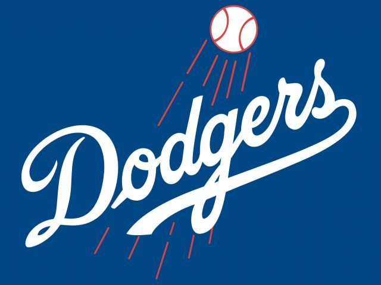

Sports
I have been playing sports my whole life. My favorite sports is baseball.
My father grew up in Los Angeles so my favorite baseball team is of course the dodgers.
My Favorite Sports Moment
As a dodgers fan my favorite player growing up was and still is Clayton Kershaw. So my favorite sports moment of all time is when he threw his first and only no hitter.